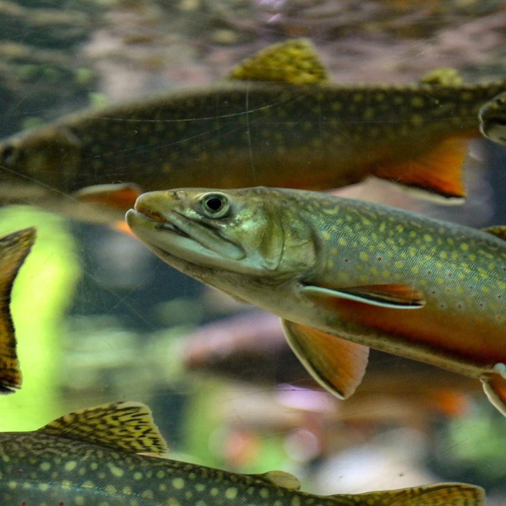

ПРЕБИОТИК
АНТИОКСИДАНТ
ЗАКРЕПИТЕЛЬ ГРАНУЛ
АДСОРБЕНТ МИКОТОКСИНОВ
ИСТОЧНИК НЕРАСТВОРИМЫХ ВОЛОКОН

Кормовая добавка
SynergySorb DetoxMyco
Введение, чтобы блок смотрелся хорошо..
Стимулирует рост полезной микрофлоры (бифидобактерий, лактобактерий), способствует улучшению усвояемости питательных и биологически активных веществ, протеинов.
липидов и жирорастворимых витаминов, что способствует увеличению сроков хранения.
Прочность, крошимость, разбухаемость, водостойкость.
внутрикишечного содержимого, исключая их негативное воздействие на организм, тем самым снижая нагрузку на печень. Таким образом оказывает положительное действие на иммунную систему
(природной сырой клетчатки), оптимизирует процесс пищеварения и увеличивает перевариваемость корма

Крупный рогатый скот

Свиньи

Птицы
